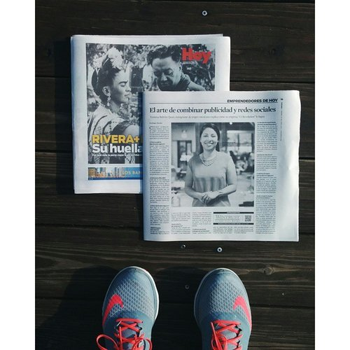

Ж
Ү
К
Т
Е
Л
У
Д
Е
.
З
А
Г
Р
У
З
К
А
.
.
L
O
A
D
I
N
G
.
.
.
-
ӨМІРБАЯНЫБИОГРАФИЯBio
- Services
- Portfolio >>
- Press
- Байланысу
- << Back
- Writing Samples
- Pr Work
- Testimonials

Ж.Ә.Махамбетов
Ж.A.Махамбетов
Zh.A.Makhambetov
Байланысу
Кантакт
Contact


Жұмат Әмзеұлы Махамбетов
Жумат Амзеевич Махамбетов
Zhumat Amzeyevich Makhambetov
Қазақстанның еңбек сіңірген әртісі
Заслуженный артист Казахстана
Honored Artist of Kazakhstan
ұлағатты ұстаз, тамаша әнші
отличный учитель, замечательный певец
great teacher wonderful singer

Қысқаша өмірбаяны
Краткая биография
Short Biography
Жұмат Әмзеұлы Махамбетов 1945 жылы 18 мамырда дүниеге келген. Әнші (баритон). ҚР-ның еңбек сіңірген артисі (1992). Құрманғазы атындағы Қазақтың мемлекеттік консерваториясын (1972; ҚР халық артисі Мұрат Мұсабаевтың класы бойынша) бітірді. Жамбыл атындағы мемлекеттік филармониясының солисі болды. Т. Жүргенов атындағы Театр және кино институты эстрада әншілері кафедрасының доценті.
Жумат Амзеевич Махамбетов родился 18 мая 1945 года. Певец (баритон). Заслуженный артист Республики Казахстан (1992). Окончил Казахскую государственную консерваторию имени Курмангазы (1972, класс народного артиста Республики Казахстан Мурата Мусабаева). Был солистом в Жамбылской государственной филармонии. Т. Доцент кафедры эстрадных исполнителей в Институте театра и кино им. Жургенова.
Zhumat Amzeevich Makhambetov was born on May 18, 1945. Singer (baritone). Honored Artist of the Republic of Kazakhstan (1992). He graduated from the Kazakh State Conservatory named after Kurmangazy (1972, class of People’s Artist of the Republic of Kazakhstan Murat Musabayev). He was a soloist in the Zhambyl State Philharmonic. T. Associate Professor of Pop Performers at the Institute of Theater and Cinema. Zhurgenov.
Қазақ композиторларының лирикалық, патриоттық әндерін нақышына келтіріп, ерекше сезіммен, жүрекке жылы тиетін қоңыр дауыспен орындайды. Репертуарында еуропа және орыс композиторларының классикалық туындылары, романстар (Туноның «Фауст» операсынан Валентиннің каватинасы, Моцарттың «Дон-Жуан» операсынан Дон-Жуан ариясы, Вердидің «Травиата» операсынан Жермонның ариясы, Чайковскийдің «Евгений Онегин» операсынан Онегиннің ариясы т. б.) орын алған.
Лирические и патриотические песни казахских композиторов, с особым чувством, с теплым коричневым голосом. Его репертуар включает в себя классические произведения европейских и русских композиторов, романсы (Валентайн «Каваатун» из оперы «Фауст» в Туноне, «Дон Жуан» из оперы «Дон Жуан», Ария Жермона из оперы «Травиата» Верди, «Ария Онегина» из оперы Чайковского «Евгений Онегин»). имели место).
Lyrical and patriotic songs of Kazakh composers, with a special feeling, with a warm brown voice. His repertoire includes classical works by European and Russian composers, romances (Valentine's Kavaatun from the opera Faust in Thunon, Don Juan from the opera Don Juan, Aria Germona from the opera La Traviata by Verdi, Aria Onegin) from Tchaikovsky's opera "Eugene Onegin"). took place).
PR Background
I'm the founder of C1 Revolution. Clients hire me because of my expertise in brand reputation and management (you can get a better sense of what that means over at the services page). Brand work includes Portillo's, Four Seasons Mexico City, Bank of America 2017 Chicago Marathon, Flowers for Dreams and more.
Prior to starting C1, I worked on comms teams for Walgreens, DePaul University, MLB's Chicago White Sox and iHeart Media.
Being curious about the industry and how people successfully navigate the digital revolution led me to create #theRevolutionaries, an interview series tackling the topic, distributed by Entrepreneur.
And last, if you haven't guessed, I love coming up with wild ideas and bringing them to life. Here's two projects I'm particularly proud of: Harry Potter Yoga and #BarackingAround (they went viral within three months of each other).
Freelance Writing
In the last year I've published articles in Food & Wine, munchies, Atlas Obscura, New York Magazine, Bitch, Tasting Table and more. This has led people to ask if I've made a career switch from PR.
It's actually the other way around. I went into PR because I couldn't find a job as a writer when I graduated from DePaul with a Master's in Journalism (my undergrad degree is in communication). I tried writing back then and landed bylines with Refinery29, Chicago Sun-Times and Forbes. However, I wasn't ready to hustle the way I am today.
Through my PR work, I connected with Food52's Amanda Hesser who encouraged me to take up writing again. Today, I write a lot more. Not because I'm giving up PR, but because it's a different way to publicize the topics I care about. One feeds the other.
As a result, I'm better equipped to help clients. Being on the other side of pitches, makes understand how sharp my work needs to be, in order to break through the noise.
Watch
#theRevolutionaries
Subscribe to our YouTube channel to be notified when new videos are posted.
KZ
RU
EN